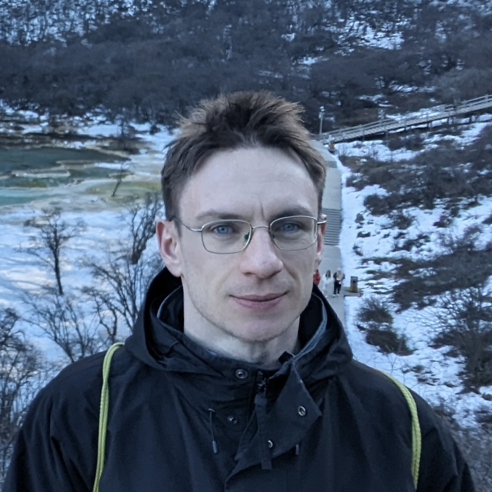

Tom Goertzen

- Postdoctoral researcher at SMRI, University of Sydney under Geordie Williamson
- Previously studied at RWTH Aachen University and University of Tokyo (1 semester)
- Research interests: representation theory, algebraic combinatorics, geometry, computer algebra
- PhD at RWTH Aachen under Alice Niemeyer & Daniel Robertz, SFB/TRR 280 project
- Collaborated with engineers & architects on resource-efficient construction design strategies
- Email: first.lastname [at] sydney.edu.au
Selected Research
- Akpanya, R., Goertzen, T. Simplicial surfaces with given automorphism group. J Algebr Comb 62, 19 (2025). DOI link
- Goertzen, T., Neef, T., Scheffler, P., Macek, D., Mechtcherine, V., Niemeyer, A. C. 3D concrete printing of topological interlocking blocks, Materials & Design, 254 (2025). DOI link
- Goertzen, T., Macek, D., Schnelle, L., Weiß, M., Reese, S., Holthusen, H., Niemeyer, A. C. Influence of block arrangement on mechanical performance in topological interlocking assemblies, Int. J. Solids and Structures, 306 (2025). DOI link
More research: Publication list (PDF), Google Scholar, ResearchGate, GitHub